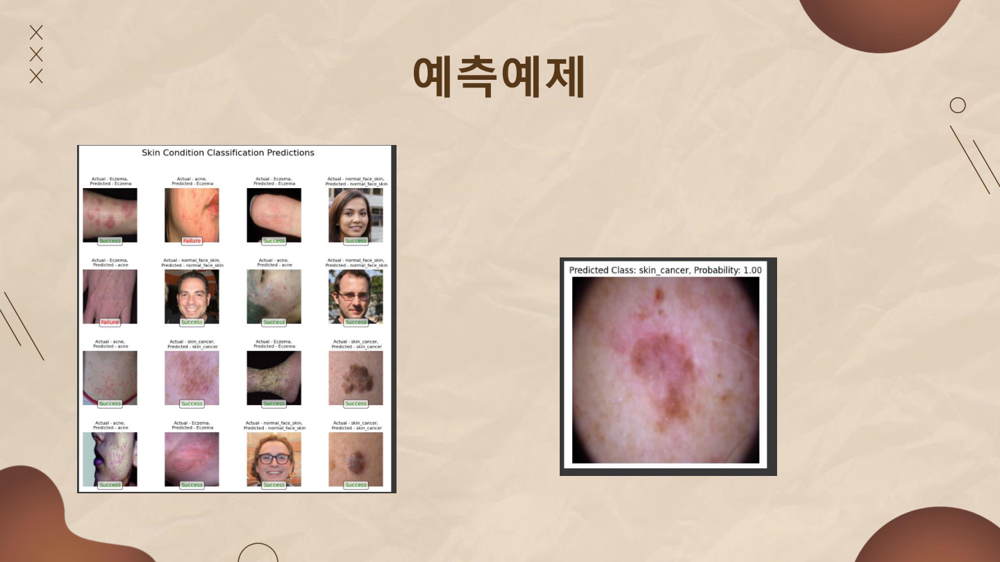

PROJECT · skin-disease-classifier
피부질환 분류 알고리즘
여드름·습진·피부암·정상 피부 4종을 분류하는 ResNet 스타일 CNN을 처음부터 설계
개요
여드름·습진·피부암·정상 피부 4종을 분류하는 CNN을 처음부터 설계한
3인 팀(구승율, 김민석, 김영준) 수업 프로젝트입니다. 본인 담당은
데이터 정제, 모델 학습 및 실행입니다. ResNet 스타일의
skip-connection 블록(Convbox)을 4개 층으로 쌓고, 배치
사이즈(32/64/128)·에폭(5 단위)·드롭아웃 조합을 직접 스윕하며 과적합
구간과 최적점을 실측으로 찾았습니다.
진행 과정 — 데이터
Kaggle 데이터셋에서 여드름/습진/피부암/정상 피부 4종을 클래스당 약 2,000장씩 수집하고, 클래스당 이미지 수를 약 2,500개로 통일해 train:test = 8:2로 정제했습니다.
모델 구조
| Input | 3×224×224 |
| Stem | Conv7x7(64) + BN + ReLU + MaxPool |
| Layer1 | Convbox(64→64) × 3 |
| Layer2 | Convbox(64→128, stride2) × 4 (+dropout) |
| Layer3 | Convbox(128→256, stride2) × 6 (+dropout) |
| Layer4 | Convbox(256→512, stride2) × 3 (+dropout) |
| Head | AdaptiveAvgPool(1×1) → FC(512 → num_classes) |
Convbox는 3×3 컨볼루션 두 개를 쌓고, 입력을 그대로
(또는 1×1 컨볼루션으로 차원을 맞춰) 더해주는 residual/skip-connection
블록입니다. 네트워크가 깊어질 때 발생하는 그래디언트 소실을 완화하기
위해 넣었습니다.
주요 기능 / 코드 구성
| dataset.py | CustomImageDataset — 클래스별 디렉터리를 순회해 이미지 경로와 레이블을 수집하는 커스텀 Dataset |
|---|---|
| model.py | Convbox(skip-connection 블록) + CustomSkinClassification(4단 레이어 CNN) |
| train.py | 전처리(Resize/RandomCrop/Normalize) + 학습/검증 루프 + 정확도 그래프 |
핵심 코드
class Convbox(nn.Module):
def __init__(self, in_channels, out_channels, stride=1, dropout_rate=None):
super(Convbox, self).__init__()
self.conv1 = nn.Conv2d(in_channels, out_channels, kernel_size=3, stride=stride, padding=1, bias=False)
self.bn1 = nn.BatchNorm2d(out_channels)
self.relu = nn.ReLU(inplace=True)
self.conv2 = nn.Conv2d(out_channels, out_channels, kernel_size=3, stride=stride, padding=1, bias=False)
self.bn2 = nn.BatchNorm2d(out_channels)
# 네트워크의 깊이를 늘릴 때 발생하는 그래디언트 소실 문제를 완화(앞선의 입력을 더해줌으로써)
self.storage = nn.Sequential()
if stride != 1 or in_channels != out_channels:
self.storage = nn.Sequential(
nn.Conv2d(in_channels, out_channels, kernel_size=1, stride=stride, bias=False),
nn.BatchNorm2d(out_channels)
)
def forward(self, x):
storage = self.storage(x) # 스킵 연결 부분을 먼저 계산
out = self.conv1(x); out = self.bn1(out); out = self.relu(out)
out = self.conv2(out); out = self.bn2(out)
if storage.size(2) != out.size(2) or storage.size(3) != out.size(3):
storage = F.interpolate(storage, size=(out.size(2), out.size(3)), mode='nearest')
out += storage # 스킵 연결을 더함
out = self.relu(out)
return outclass CustomImageDataset(Dataset):
def __init__(self, data_set_path, transforms=None):
self.data_set_path = data_set_path
self.image_files_path, self.labels, self.length, self.num_classes = self.read_data_set()
self.transforms = transforms
def read_data_set(self):
all_img_files = []
all_labels = []
class_names = os.walk(self.data_set_path).__next__()[1]
for index, class_name in enumerate(class_names):
label = index
img_dir = os.path.join(self.data_set_path, class_name)
img_files = os.walk(img_dir).__next__()[2]
for img_file in img_files:
img_file = os.path.join(img_dir, img_file)
img = Image.open(img_file)
if img is not None:
all_img_files.append(img_file)
all_labels.append(label)
return all_img_files, all_labels, len(all_img_files), len(class_names)
def __getitem__(self, index):
image = Image.open(self.image_files_path[index]).convert("RGB")
if self.transforms is not None:
image = self.transforms(image)
return {'image': image, 'label': self.labels[index]}hyper_param_epoch = 20
hyper_param_batch = 64
hyper_param_learning_rate = 0.001
transform_train = transforms.Compose([
transforms.Resize((256, 256)),
transforms.RandomCrop(224),
transforms.ToTensor(),
transforms.Normalize(resize_train_mean, resize_train_std)
])
train_loader = DataLoader(train_data_set, batch_size=hyper_param_batch, shuffle=True)
optimizer = torch.optim.Adam(custom_model.parameters(), lr=hyper_param_learning_rate)
for e in range(hyper_param_epoch):
custom_model.train()
for i_batch, item in enumerate(train_loader):
images = item['image'].to(device)
labels = item['label'].to(device)
outputs = custom_model(images)
loss = criterion(outputs, labels)
optimizer.zero_grad()
loss.backward()
optimizer.step()
# ... 배치/에폭마다 훈련·테스트 정확도를 기록해 accuracy 그래프로 시각화실험 — 과적합을 어떻게 잡았나
| 실험 | 결과 |
|---|---|
| 에포크 5 단위 증가 | 20 미만은 학습 부족, 30 이상은 20과 정확도는 비슷한데 학습 시간만 늘고 과대적합 발생 → 20으로 결정 |
| 배치 사이즈 32 / 64 / 128 | 64에서 최적, 128 이상은 메모리 부족 에러 발생 → 64로 결정 |
| Batch Normalize | 훈련/테스트 배치 정규화로 데이터 분포를 통일해 과적합 방지 |
| 데이터 정제 | 클래스당 이미지 수를 약 2,500개로 통일, train:test = 8:2로 조정 |
결과물 — 예측 예제

느낀 점
배치 사이즈·에폭·드롭아웃을 직접 스윕하면서, 파라미터를 하나 바꿀 때마다 정확도가 어떻게 움직이는지 실측으로 확인하는 과정이 감으로 설계할 때보다 훨씬 신뢰할 수 있는 결정을 하게 해준다는 걸 배웠습니다. 동시에 검증 정확도가 99%대로 높게 나온 것을 보고 바로 만족하지 않고, 클래스 간 시각적 차이가 뚜렷해서 나온 결과일 수 있다는 점까지 스스로 짚어본 것도 이번 프로젝트에서 얻은 습관입니다.
문제 해결
에폭을 늘릴수록 성능이 계속 좋아질 거라 예상했지만, 30 에폭 이상에서는 20 에폭과 정확도는 비슷한데 학습 시간만 늘고 과대적합 징후가 나타났습니다. 배치 사이즈도 128에서는 메모리 부족 에러가 났습니다. 감으로 정하는 대신 배치 사이즈(32/64/128)·에폭(5 단위)을 직접 스윕하며 비교한 끝에 배치 64·에폭 20을 최적점으로 확정했고, Batch Normalization까지 더해 과적합을 통제했습니다.